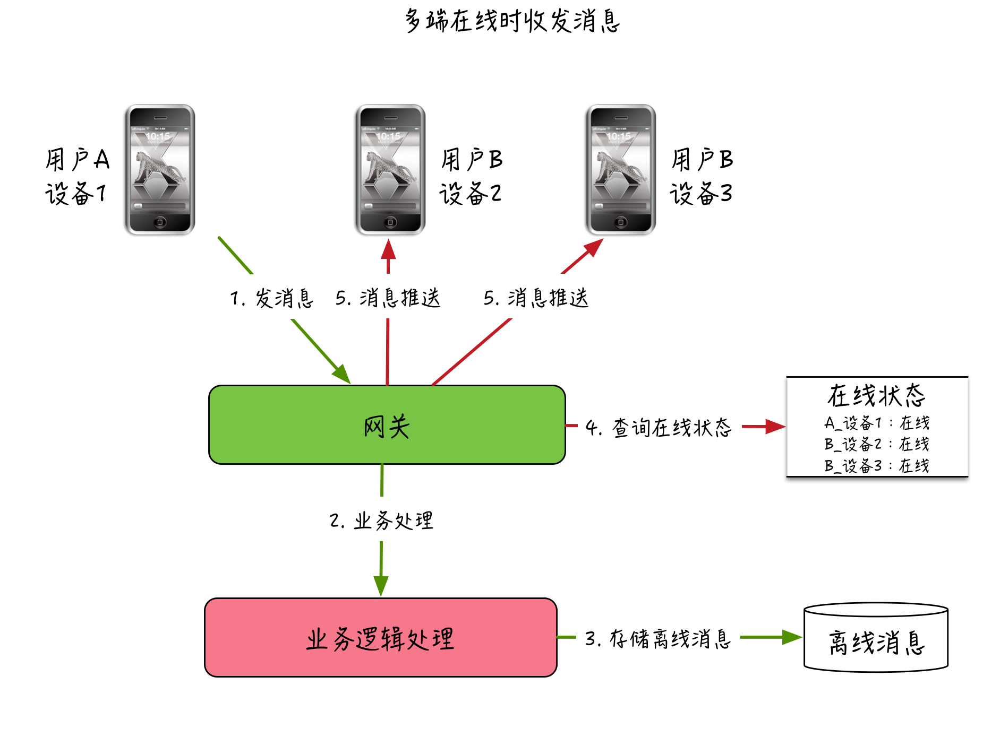
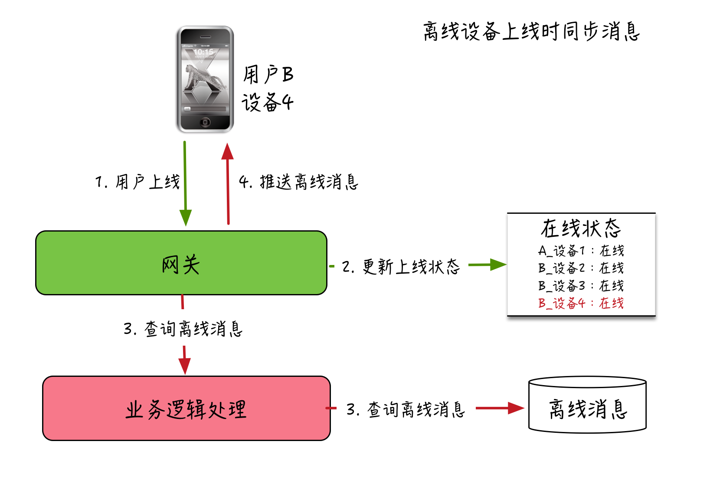
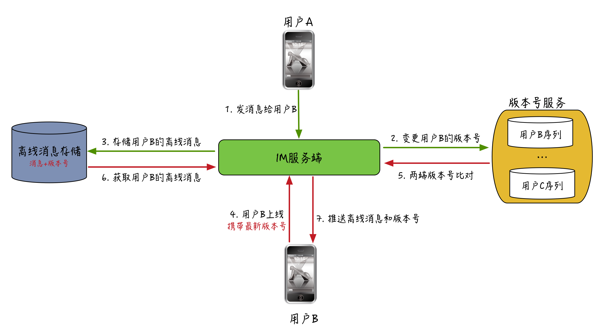

- 00 开篇词 搞懂“实时交互”的IM技术，将会有什么新机遇？.md.html
- 01 架构与特性：一个完整的IM系统是怎样的？.md.html
- 02 消息收发架构：为你的App，加上实时通信功能.md.html
- 03 轮询与长连接：如何解决消息的实时到达问题？.md.html
- 04 ACK机制：如何保证消息的可靠投递？.md.html
- 05 消息序号生成器：如何保证你的消息不会乱序？.md.html
- 06 HttpDNS和TLS：你的消息聊天真的安全吗？.md.html
- 07 分布式锁和原子性：你看到的未读消息提醒是真的吗？.md.html
- 08 智能心跳机制：解决网络的不确定性.md.html
- 09 分布式一致性：让你的消息支持多终端漫游.md.html
- 10 自动智能扩缩容：直播互动场景中峰值流量的应对.md.html
- 11 期中实战：动手写一个简易版的IM系统.md.html
- 12 服务高可用：保证核心链路稳定性的流控和熔断机制.md.html
- 13 HTTP Tunnel：复杂网络下消息通道高可用设计的思考.md.html
- 14 分片上传：如何让你的图片、音视频消息发送得更快？.md.html
- 15 CDN加速：如何让你的图片、视频、语音消息浏览播放不卡？.md.html
- 16 APNs：聊一聊第三方系统级消息通道的事.md.html
- 17 Cache：多级缓存架构在消息系统中的应用.md.html
- 18 Docker容器化：说一说IM系统中模块水平扩展的实现.md.html
- 19 端到端Trace：消息收发链路的监控体系搭建.md.html
- 20 存储和并发：万人群聊系统设计中的几个难点.md.html
- 21 期末实战：为你的简约版IM系统，加上功能.md.html
- 22 答疑解惑：不同即时消息场景下架构实现上的异同.md.html
- 结束语 真正的高贵，不是优于别人，而是优于过去的自己.md.html
- 捐赠
09 分布式一致性：让你的消息支持多终端漫游
你好，我是袁武林。今天我们开始进入场景篇的部分，在这个部分中，我会介绍在几种典型的垂直业务场景下，IM系统具体是如何实现的。
在即时消息的场景里，消息的多终端漫游是一个相对比较高级的功能，所谓的“多终端漫游”是指：用户在任意一个设备登录后，都能获取到历史的聊天记录。
这个功能对于有多个手机的用户来说是一个非常有用的功能，试想一下用户在交叉使用多个手机进行聊天后，如果不能在多个终端间自动同步所有的聊天记录，使用体验也不会太好。
但并不是所有的即时消息App都支持这个特性，比如微信虽然支持多端登录，但不知道出于什么考虑并不能在多端同步历史消息，这可能也是微信为数不多被诟病的一个小问题吧。
而Telegram和QQ却很好地支持了“多终端漫游”，使得用户在任意端登录都能获取到所有最近收发的消息。
如何实现多终端消息漫游
那接下来我们看一下，怎么才能让收发的消息能在多个终端漫游。要支持消息多终端漫游一般来说需要两个前置条件：一种是通过设备维度的在线状态来实现，一种是通过离线消息存储来实现。
设备维度的在线状态
对于在多个终端同时登录并在线的用户，可以让IM服务端在收到消息后推给接收方的多台设备，也推给发送方的其他登录设备。
这样的话，就要求能够按照用户的设备维度来记录在线状态，这个其实也是支持多端登录的一个前提。
离线消息存储
另外，如果消息发送时，接收方或者发送方只有一台设备在线，可能一段时间后，才通过其他设备登录来查看历史聊天记录，这种离线消息的多终端漫游就需要消息在服务端进行存储了。当用户的离线设备上线时，就能够从服务端的存储中获取到离线期间收发的消息。
下面，我简单把“多端在线时消息收发的过程”和“离线设备上线时同步消息的过程”画了一下。你可以自行参考，这里就不作具体说明了。


离线消息同步的几个关键点
对于多终端同时在线的情况，实现上相对比较简单，只需要维护一套设备维度的在线状态就能同时推送多台设备。
而离线设备上线后拉取历史消息的过程就要复杂一些，比如，离线消息的存储和普通消息相比差别在哪？应该怎么存？每次上线怎么知道应该拉取哪些离线消息？因此，这里我来主要说一下离线消息同步的问题。
离线消息该怎么存？
在课程的第2讲中，我介绍过比较常见的消息索引的存储方式，你可以回想一下：一条消息在服务端存储一般会分为消息内容表和消息索引表，其中消息索引表是按照收发双方的会话维度来设计的，这样便于收发双方各自查看两人间的聊天内容。
那么问题来了：离线消息的存储是否可以直接使用这个消息索引表？
首先，对于离线消息的存储，不仅仅需要存储消息，还需要存储一些操作的信令，比如：用户A在设备1删除了和用户B的某条消息，这个信令虽然不是一条消息，也需要在离线消息存储中存起来，这样当用户A的另一台设备2上线时，能通过离线消息存储获取这个删除消息的信令，从而在设备2上也能从本地删除那条消息。
对于这些操作信令，没有消息ID的概念和内容相关的信息，而且是一个一次性的动作，没必要持久化，也不适合复用消息索引表；另外，消息索引表是收发双方的会话维度，而获取离线消息的时候是接收方或者发送方的单个用户维度来获取数据的，没必要按会话来存，只需要按UID来存储即可。
此外，还有一个需要考虑的点，离线消息的存储成本是比较高的，而我们并不知道用户到底有几个设备，因此离线消息的存储一般都会有时效和条数的限制，比如保留1周时间，最多存储1000条，这样如果用户一台设备很久不登录然后某一天再上线，只能从离线消息存储中同步最近一周的历史聊天记录。
多端消息同步机制
离线消息的同步还有一个重要的问题是，由于并不知道用户到底会有多少个终端来离线获取消息，我们在一个终端同步完离线消息后，并不会从离线存储中删除这些消息，而是继续保留以免后续还有该用户的其他设备上线拉取，离线消息的存储也是在不超过大小限制和时效限制的前提下，采用FIFO（先进先出）的淘汰机制。
这样的话用户在使用某一个终端登录上线时，需要知道应该获取哪些离线消息，否则将所有离线都打包推下去，就会造成两种问题：一个是浪费流量资源；另外可能会导致因为有很多消息在终端中已经存在了，全部下推反而会导致消息重复出现和信令被重复执行的问题。因此，需要一个机制来保证离线消息可以做到按需拉取。
一种常见的方案是采用版本号来实现多终端和服务端的数据同步。下面简单说一下版本号的概念。
- 每个用户拥有一套自己的版本号序列空间。
- 每个版本号在该用户的序列空间都具备唯一性，一般是64位。
- 当有消息或者信令需要推送给该用户时，会为每条消息或者信令生成一个版本号，并连同消息或者信令存入离线存储中，同时更新服务端维护的该用户的最新版本号。
- 客户端接收到消息或者信令后，需要更新本地的最新版本号为收到的最后一条消息或者信令的版本号。
- 当离线的用户上线时，会提交本地最新版本号到服务端，服务端比对服务端维护的该用户的最新版本号和客户端提交上来的版本号，如不一致，服务端根据客户端的版本号从离线存储获取“比客户端版本号新”的消息和信令，并推送给当前上线的客户端。
为了便于理解，我简单把这个离线同步消息的过程画了一下。

离线消息存储超过限额了怎么办？
在用户上线获取离线消息时，会先进行客户端和服务端的版本号比较，如果版本号不一致才会从离线消息存储中，根据客户端上传的最新版本号来获取“增量消息”。
如果离线消息存储容量超过限制，部分增量消息被淘汰掉了，会导致根据客户端最新版本号获取增量消息失败。
这种情况的处理方式可以是：直接下推所有离线消息或者从消息的联系人列表和索引表中获取最近联系人的部分最新的消息，后续让客户端在浏览时再根据“时间相关”的消息ID来按页获取剩余消息，对于重复的消息让客户端根据消息ID去重。
因为消息索引表里只存储消息，并不存储操作信令，这种处理方式可能会导致部分操作信令丢失，但不会出现丢消息的情况。因此，对于资源充足且对一致性要求高的业务场景，可以尽量提升离线消息存储的容量来提升离线存储的命中率。
离线存储写入失败了会怎么样？
在处理消息发送的过程中，IM服务端可能会出现在获取到版本号以后写入离线消息存储时失败的情况，在这种情况下，如果版本号本身只是自增的话，会导致取离线消息时无法感知到有消息在写离线存储时失败的情况。
因为如果这一条消息写离线缓存失败，而下一条消息又成功了，这时拿着客户端版本号来取离线消息时发现，客户端版本号在里面，还是可以正常获取离线消息的，这样就会漏推之前写失败的那一条。
那么，怎么避免这种离线存储写失败无感知的问题呢？
一个可行的方案是可以在存储离线消息时不仅存储当前版本号，还存储上一条消息或信令的版本号，获取消息时不仅要求客户端最新版本号在离线消息存储中存在，同时还要求离线存储的消息通过每条消息携带的上一版本号和当前版本号能够整体串联上，否则如果离线存储写入失败，所有消息的这两个版本号是没法串联上的。
这样，当用户上线拉取离线消息时，IM服务端发现该用户的离线消息版本号不连续的情况后，就可以用和离线消息存储超限一样的处理方式，从消息的联系人列表和索引表来获取最近联系人的部分最新的消息。
消息打包下推和压缩
对于较长时间不上线的用户，上线后需要拉取的离线消息比较多，如果一条一条下推会导致整个过程很长，客户端看到的就是一条一条消息蹦出来，体验会很差。
因此，一般针对离线消息的下推会采用整体打包的方式来把多条消息合并成一个大包推下去，同时针对合并的大包还可以进一步进行压缩，通过降低包的大小不仅能减少网络传输时间，还能节省用户的流量消耗。
发送方设备的同步问题
另外还有一个容易忽视的问题，版本号机制中，我们在下推消息时会携带每条消息的版本号，然后更新为客户端的最新版本号。而问题是发送方用于发出消息的设备本身已经不需要再进行当前消息的推送，没法通过消息下推来更新这台设备的最新版本号，这样的话这台设备如果下线后再上线，上报的版本号仍然是旧的，会导致IM服务端误判而重复下推已经存在的消息。
针对这个问题，一个比较常见的解决办法是：给消息的发送方设备仍然下推一条只携带版本号的单独的消息，发送方设备接收到该消息只需要更新本地的最新版本号就能做到和服务端的版本号同步了。
小结
好了，最后我来总结一下今天的内容。
消息多终端漫游是很多即时消息场景中需要支持的一个特性，要支持消息多终端漫游，有两种实现方式：一种是要求在线状态需要支持用户设备维度进行维护；另一种是要求消息和信令在服务端进行用户维度的离线存储。
除此之外，还需要一个“多终端和服务端状态同步的机制”来保证数据的最终一致性，业界比较常见的方案是采用版本号机制来根据客户端版本和服务端版本的差异，在用户上线时来获取“增量消息和信令”。离线消息存储未命中时，可以通过持久化的最近联系人列表和索引表来进行有损的补救。针对离线消息的下推还可以通过“多条消息打包和压缩”的方式来优化上线体验。
最后给大家一个思考题：如果用户的离线消息比较多，有没有办法来减少用户上线时离线消息的数据传输量？
以上就是今天课程的内容，你可以给我留言，我们一起讨论。感谢你的收听，我们下期再见。
© 2019 - 2023 Liangliang Lee. Powered by gin and hexo-theme-book.